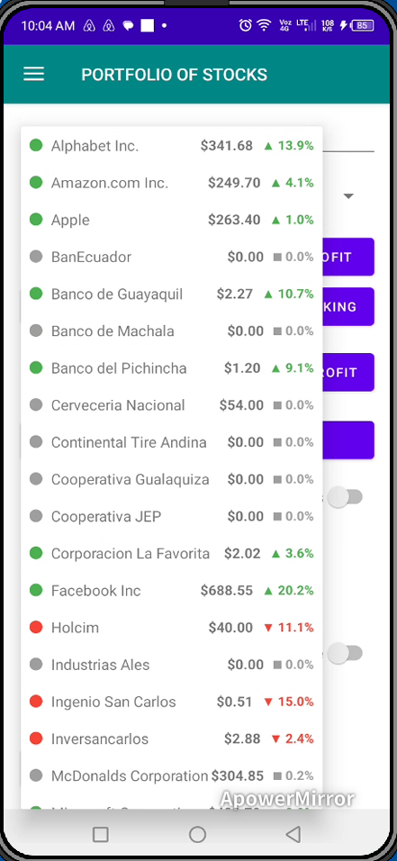
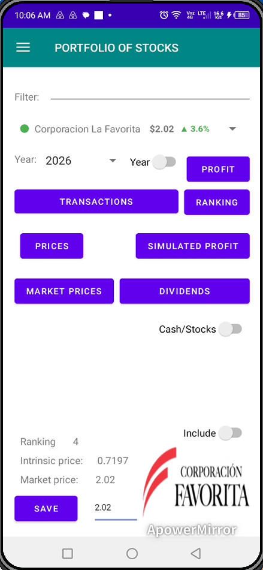
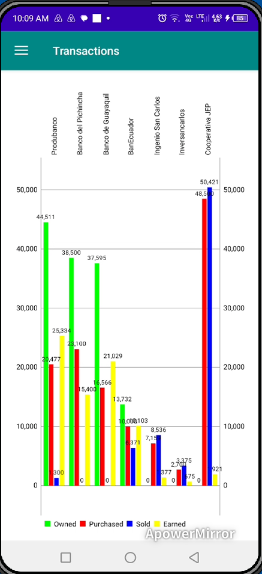
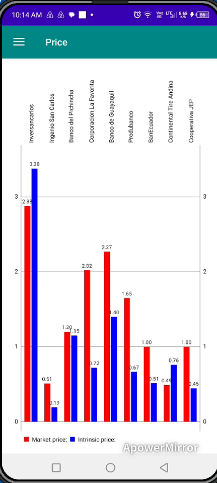

Interfaccia di Login Mobile
Schermata di accesso sicura che fornisce accesso all’ambiente mobile di gestione del portafoglio.

Finestra di Sincronizzazione Desktop
Modulo di sincronizzazione che collega l’applicazione mobile al software desktop di gestione degli investimenti.

Selettore delle Azioni Monitorate
Interfaccia spinner che mostra l’elenco delle azioni monitorate disponibili per l’analisi mobile del portafoglio.

Dashboard Mobile Principale
Panoramica dell’interfaccia dell’applicazione mobile, inclusi pulsanti di navigazione, riepiloghi finanziari e informazioni sul portafoglio.

Grafico a Barre della Distribuzione dei Dividendi
Visualizzazione tramite grafico a barre che confronta i dividendi distribuiti dalle diverse azioni del portafoglio.

Panoramica di Transazioni e Partecipazioni
Mostra acquisti di azioni, vendite, dividendi in azioni ricevuti e il numero di azioni ancora possedute.

Analisi del Ranking delle Azioni
Classifica delle azioni basata su valutazioni e modelli di scoring generati dal software desktop.

Prezzo di Mercato vs Valore Intrinseco
Confronto tra i prezzi medi annuali di mercato e i valori intrinseci delle azioni monitorate.

Analisi dei Profitti Simulati
Grafico che mostra i profitti simulati nel caso in cui tutte le posizioni del portafoglio venissero liquidate, basato sulle simulazioni del software desktop.

Radar di Distribuzione dei Dividendi
Grafico radar che illustra le distribuzioni dei dividendi nel corso degli anni per l’azione selezionata.

Grafico ad Area dei Prezzi Giornalieri di Mercato
Grafico ad area che rappresenta i movimenti giornalieri dei prezzi di mercato della società selezionata.